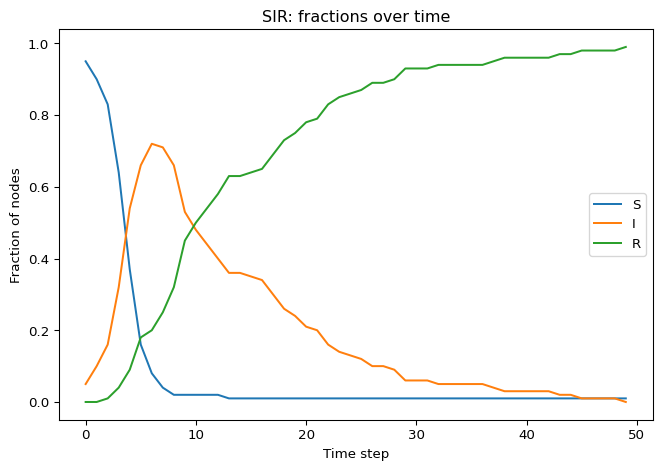

import networkx as nx
import numpy as np
import matplotlib.pyplot as plt
SEED = 7
# Model parameters
beta = 0.20
mu = 0.10
# Simulation parameters
steps = 120
initial_infected = 5
N = 100Networks: SIR Model
Guided Exercise
The SIR (Susceptible–Infected–Recovered) model is the “next step” after SIS: once a node recovers, it becomes permanently immune (Kermack and McKendrick 1927; Keeling and Rohani 2008).
In this module, we reuse the same ideas from the SIS page (graph models + node attributes) and focus on what is new:
- the new Recovered (R) state,
- the fact that infection cannot return once it disappears,
- the notion of final epidemic size.
What is the SIR Model?
- States: Each node can be Susceptible (S), Infected (I), or Recovered (R).
- Transitions:
- \(S \to I\): a susceptible node becomes infected through infected neighbors.
- \(I \to R\): an infected node recovers and becomes permanently immune.
- Permanent immunity: \(R\) is an absorbing state (once recovered, always recovered).
Discrete-Time Update Rule
We simulate in discrete time steps \(t = 0, 1, 2, \dots\).
If a susceptible node has \(m\) infected neighbors, we use the same “independent trials” rule as SIS (Keeling and Rohani 2008):
\[ \mathbb{P}(S \to I) = 1 - (1 - \beta)^m. \]
If a node is infected, it recovers with probability:
\[ \mathbb{P}(I \to R) = \mu. \]
Recovered nodes stay recovered:
\[ \mathbb{P}(R \to R) = 1. \]
What changes compared to SIS?
In SIS, \(I \to S\) (you become susceptible again). In SIR, \(I \to R\) (you become immune). That single change completely changes the long-term behavior.
Absorbing States
On a finite graph with \(\mu > 0\), the process reaches a time \(T\) such that there are no infected nodes (\(I(T)=0\)), and after that nothing can ever change (Keeling and Rohani 2008; Pastor-Satorras et al. 2015).
Each node can become infected at most once (because \(R\) is permanent), so there can be at most \(N\) infection events. Since recovery happens with positive probability, infections cannot persist forever.
This means SIR always ends in a “frozen” configuration containing only \(S\) and \(R\) nodes.
Imports and Parameters
Choose a Network
We will reuse the same helper pattern as in the SIS page (see SIS Model).
G = make_graph("random", n=N, seed=SEED)
print("N, E =", G.number_of_nodes(), G.number_of_edges())N, E = 100 399Initialize States
As in SIS, we store states on the graph using a node attribute called state.
initialize_state(G, initial_infected=initial_infected, seed=SEED)
print(
"Initial counts (S, I, R) =",
sum(G.nodes[u]["state"] == "S" for u in G.nodes()),
sum(G.nodes[u]["state"] == "I" for u in G.nodes()),
sum(G.nodes[u]["state"] == "R" for u in G.nodes()),
)Initial counts (S, I, R) = 95 5 0Implement the SIR Dynamics
The update is synchronous: compute all changes from the old state, then apply them.
def step_sir(G, beta, mu):
# TODO: read current states from G.nodes[u]["state"]
# TODO: build new_state dict with values in {"S","I","R"}
# TODO: write new_state back via nx.set_node_attributes
return G
Solved:
step_sir()
def step_sir(G, beta, mu):
current = {u: G.nodes[u]["state"] for u in G.nodes()}
new_state = current.copy()
for u in G.nodes():
if current[u] == "S":
m = sum(1 for v in G.neighbors(u) if current[v] == "I")
if m > 0:
p_infect = 1 - (1 - beta) ** m
if np.random.random() < p_infect:
new_state[u] = "I"
elif current[u] == "I":
if np.random.random() < mu:
new_state[u] = "R"
else:
# "R" stays "R"
pass
nx.set_node_attributes(G, new_state, "state")
return GNow wrap it into a simulator. Compared to SIS, we typically track all three counts: \(S(t), I(t), R(t)\).
def run_sir(G, beta, mu, steps=100, initial_infected=5, seed=SEED):
# TODO
return S_counts, I_counts, R_counts
Solved:
run_sir()
def run_sir(G, beta, mu, steps=100, initial_infected=5, seed=SEED):
H = G.copy()
# Make the whole run reproducible (step_sir uses np.random.random)
np.random.seed(seed)
initialize_state(H, initial_infected=initial_infected, seed=seed)
def counts(H):
S = sum(H.nodes[u]["state"] == "S" for u in H.nodes())
I = sum(H.nodes[u]["state"] == "I" for u in H.nodes())
R = sum(H.nodes[u]["state"] == "R" for u in H.nodes())
return S, I, R
S0, I0, R0 = counts(H)
S_counts = [S0]
I_counts = [I0]
R_counts = [R0]
for _ in range(steps):
if I_counts[-1] == 0:
break
step_sir(H, beta=beta, mu=mu)
S, I, R = counts(H)
S_counts.append(S)
I_counts.append(I)
R_counts.append(R)
return S_counts, I_counts, R_countsRun and Visualize
The “epidemic curve” in SIR typically shows a single peak in \(I(t)\) and then decay to zero.

Key Questions to Answer
Here are two precise, testable questions that are specific to SIR:
- Can the network become fully infected? i.e., does there exist a time \(t\) such that \(I(t)=N\)?
- Can the network become fully “healed”? i.e., does there exist a time \(t\) such that \(I(t)=0\)?
In SIR, the second question has a clean answer:
- Yes. In fact, for a finite graph with \(\mu>0\), you eventually reach \(I(t)=0\) and then you are stuck forever (absorbing state).
The first question depends on \((\beta,\mu)\) and the network. It can happen transiently, but it is not an absorbing state.
Discuss
- In SIR, is “fully healed” the same as “everyone is susceptible again”? Why not?
- What does “final epidemic size” mean here? (Hint: look at \(R(\infty)\).)
- Can you have an epidemic with a large peak but small final size? Or vice versa?
- Compare two graphs with the same \(N\) and similar average degree: which features (hubs, clustering, path length) do you expect to increase \(R(\infty)\)?
What’s Next?
Compare SIS vs SIR: how does permanent immunity change what happens “in the long run”? Then apply your knowledge to real-world data:
References
Daley, D. J., and D. G. Kendall. 1965. “Stochastic Rumours.” Journal of the Institute of Mathematics and Its Applications 1 (1): 42–55. https://doi.org/10.1093/imamat/1.1.42.
Keeling, Matt J., and Pejman Rohani. 2008. Modeling Infectious Diseases in Humans and Animals. Princeton University Press.
Kermack, William O., and Anderson G. McKendrick. 1927. “A Contribution to the Mathematical Theory of Epidemics.” Proceedings of the Royal Society A 115 (772): 700–721. https://doi.org/10.1098/rspa.1927.0118.
Pastor-Satorras, Romualdo, Claudio Castellano, Piet Van Mieghem, and Alessandro Vespignani. 2015. “Epidemic Processes in Complex Networks.” Reviews of Modern Physics 87 (3): 925–79. https://doi.org/10.1103/RevModPhys.87.925.